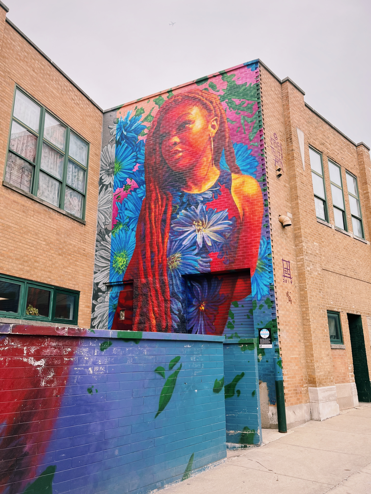
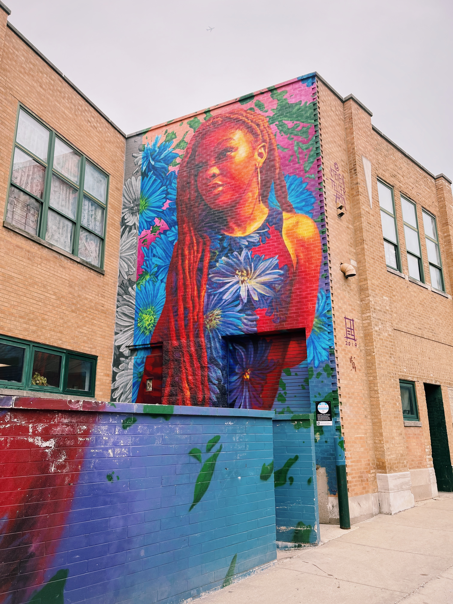
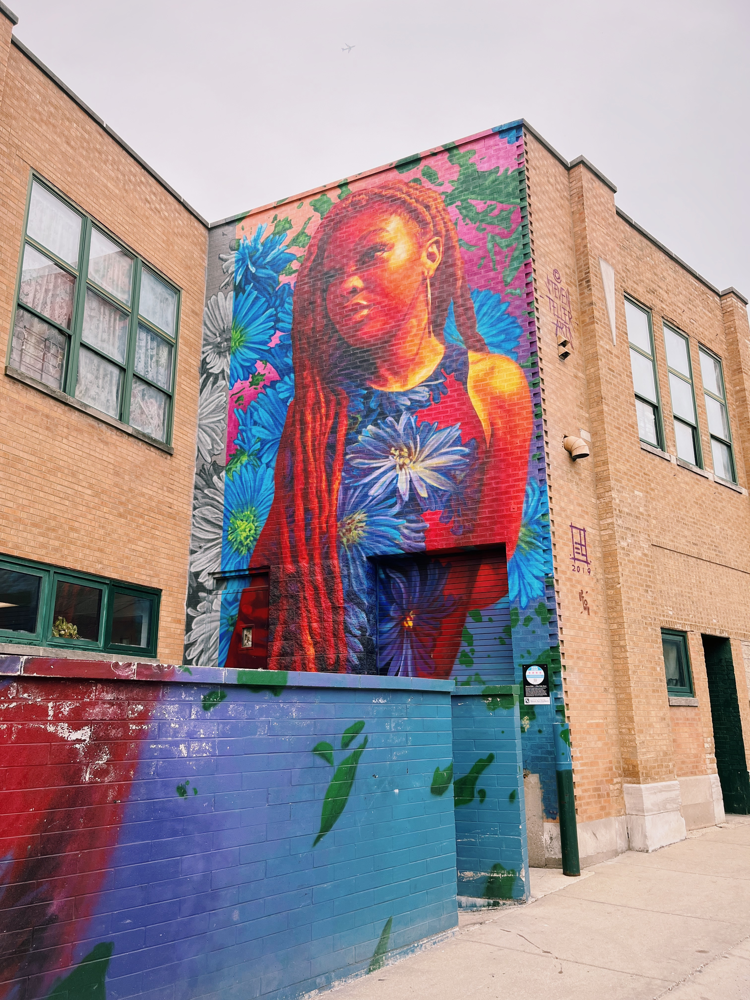

Street Art in Chicago
I've lived in Chicago for the past nine years, and have fallen in love with its street art.
Below are some of my favite pieces that I have stumbled into while exploring the city.

 

I've lived in Chicago for the past nine years, and have fallen in love with its street art.
Below are some of my favite pieces that I have stumbled into while exploring the city.
